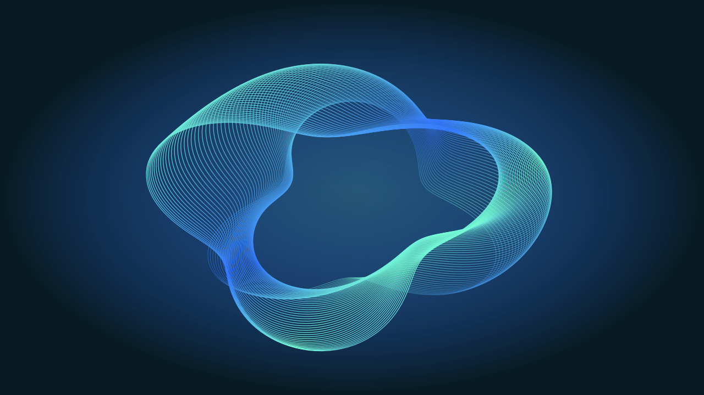
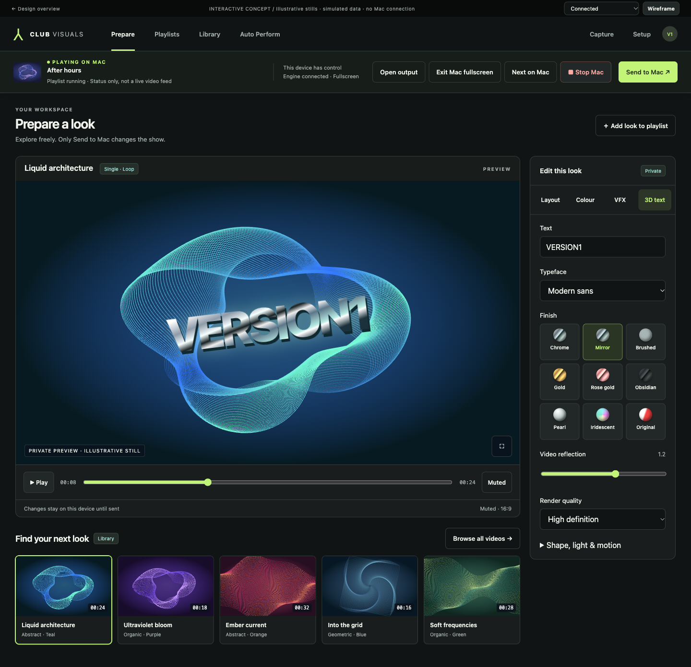
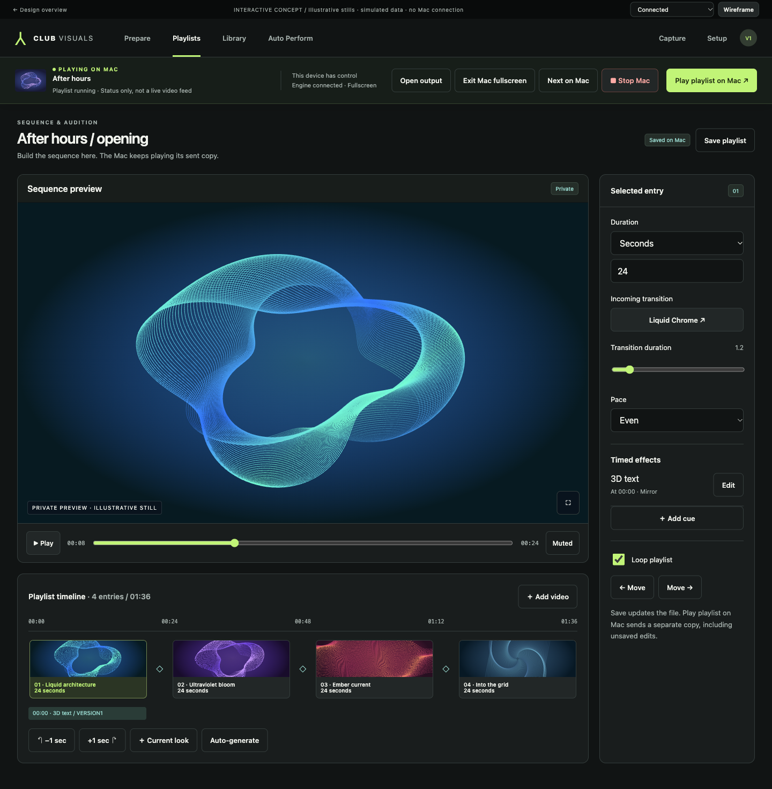
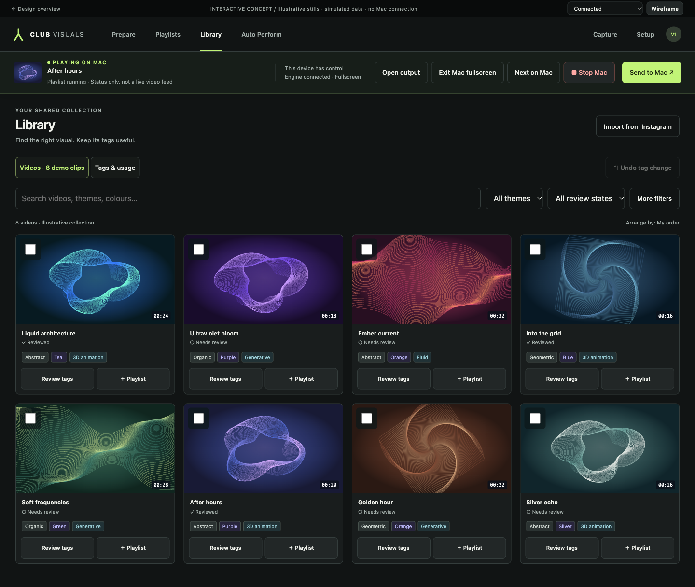
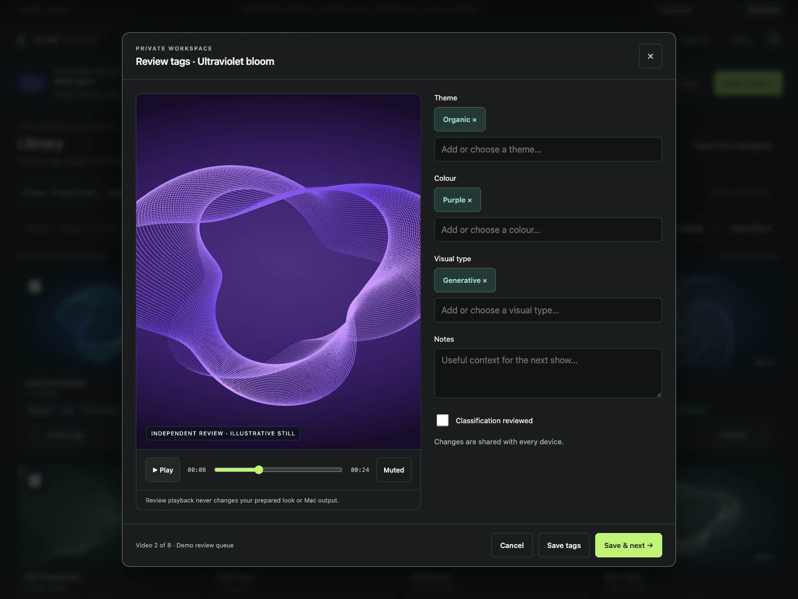
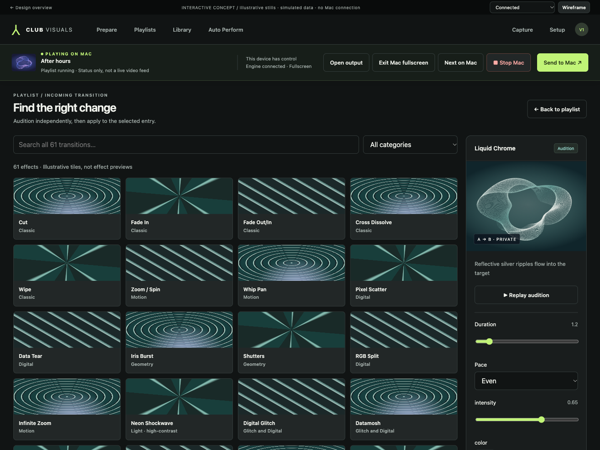
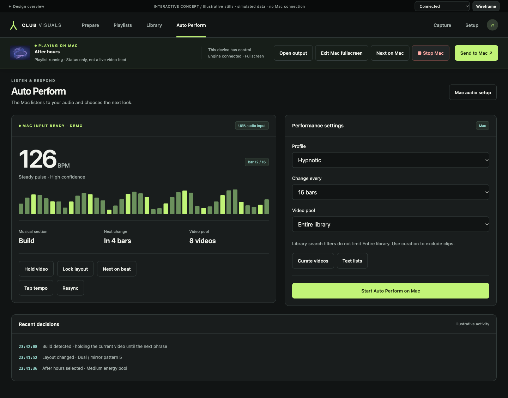
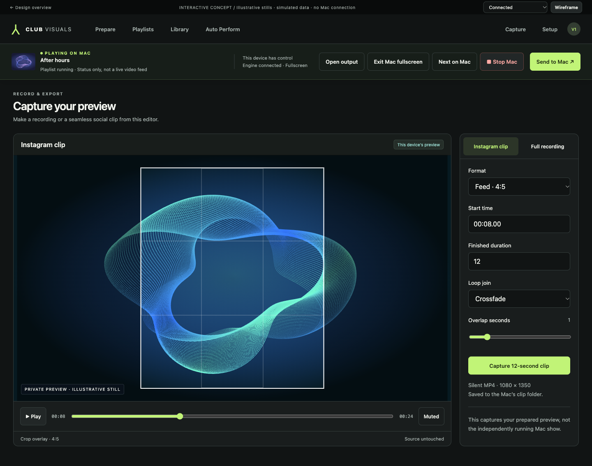
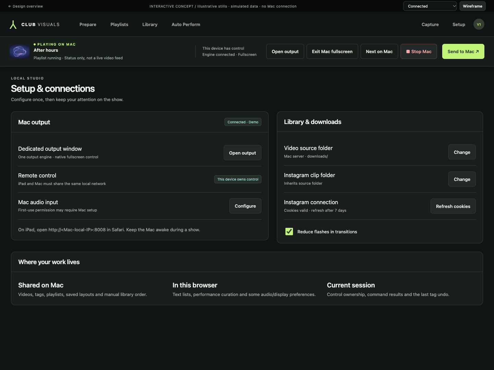
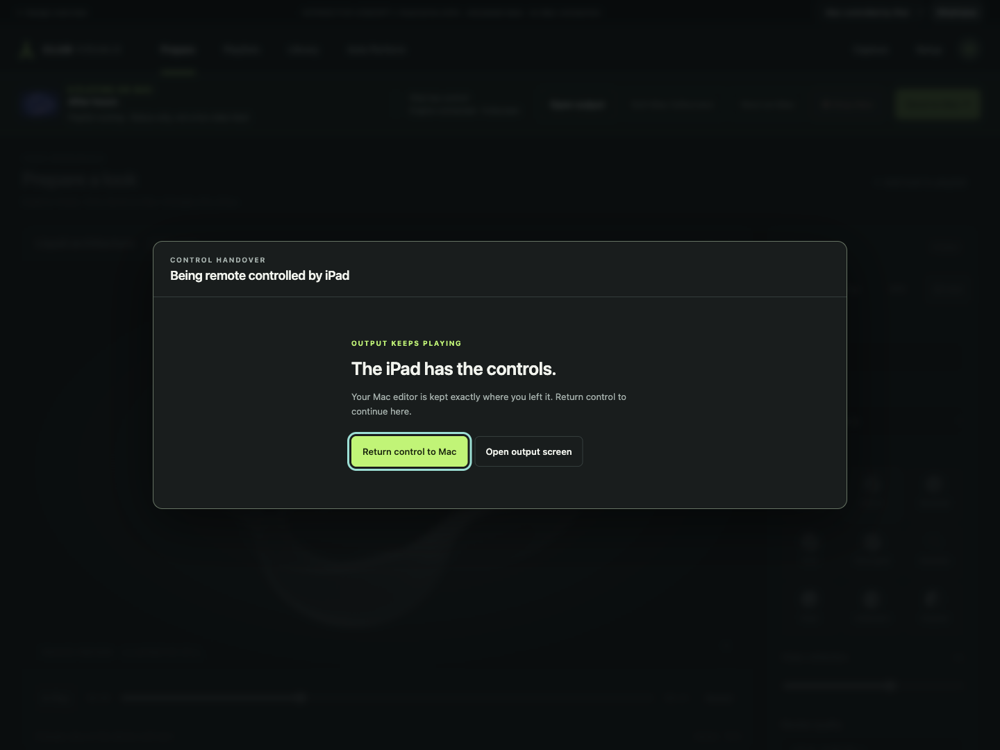

Prepare here. Play on Mac.
The private canvas is the focus. A separate, pinned control bar shows the Mac’s state and keeps deliberate live actions in reach.
A video-first workspace for preparing your next look, organising your collection and controlling the Mac from your iPad.
A proposed interface, ready for review. Interactions use demo data and illustrative stills. Nothing connects to your Mac output or changes your library.

PREPARE / PERFORM / REFINEThe private canvas is the focus. A separate, pinned control bar shows the Mac’s state and keeps deliberate live actions in reach.
Layout, colour, VFX and 3D materials share one inspector. Detailed tuning opens in context, leaving space for the video.
Large controls, explicit labels and alternatives to dragging. Portrait stacks the inspector below the preview; live controls stay above it.
Click an image for the full-resolution mockup. Open the prototype to move between screens and try the key interactions.









Landscape preserves the preview and inspector. Portrait gives the preview the full width and stacks the editing controls.
The same interaction model in low fidelity. The numbered layout map explains the purpose of each area.
The design keeps the existing feature contracts. The specification maps every feature to its proposed home.
Browse screens, send a simulated look, review tags and try offline, revoked-control and handover states.
Navigation, behaviour, visual system, accessibility, feature coverage and implementation sequence.
Build alongside the current UI, isolate test data, keep the old engine and provide a clear way back.